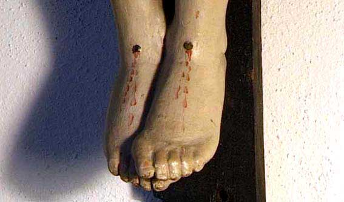
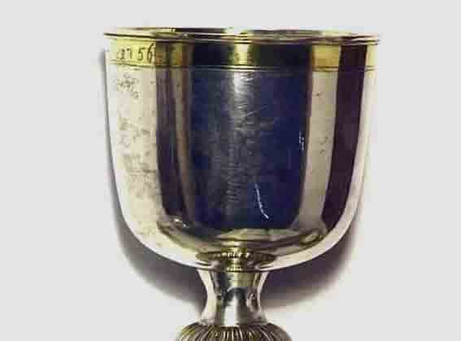

Vest-Agder Fylkesmuseum - Kirkerommet
En bildeserie laget av Torvald Slettebø, for Vest-Agder Fylkesmuseum, med direktør Jan Henrik Munksgaard som sakkyndig omviser. Bildene er hentet fra en film tatt opp på Vest-Agder Fylkesmuseum
Kirkerommet ved Vest-Agder Fylkesmuseum er innredet som det opprinnelige "hospitalskirkerommet" i Tordenskioldsgate, med alterutstyret derfra. Men det er også utstilt utstyr reddet da domkirken brant i 1880, og enkelte gjenstander også fra andre kirker.
Sitatene er fra kirkeavsnittene i klenodiet fra 1905: "Næringslivet i Kristianssand i ældre og nyere Tid" af overrettssagfører P. Hansen.
Den første kirken i Kristiansand kjenner vi bare utseende av fra et bildekart fra 1662. Den har øyensynlig vært bygd i bindingsverk, sannsynligvis som en kortskipet korskirke. Det finnes tilsvarende andre kirkebygg fra den tiden.

Det eneste bevarte fra denne kirken - og kanskje den eldste gjenstand fra byen overhodet - er dette prekestol-relieffet.
Det er skåret i 1645, kanskje av samme dyktige treskjærer som laget et tilsvarende i Tønsberg på samme tid.
Dyktige kirkekunstnere kom gjerne fra utlandet, og reiste rundt i landet der de trengtes.
Domkirken tegnet i begynnelsen av 1800-tallet, men ferdig bygget i 1738. Det er byens andre domkirke, og altså tredje kirke. Kristiansand ble stiftsstad i 1682, men den første domkirken brant i 1734.

Den andre domkirken ble bygd på murene av den første. Men murene vi ser på denne branntomten, i 1880, ble revet, og vår nåværende kirke bygd.
Om bybrandene i Kristiansand
"Den 18de Oktober 1880 udbrød der Ild i Skippergaden No. 9, der dengang var Hotel. Det var om Natten og det blæste en sterk Nordvest. Det lykkedes ikke at begrændse Ilden ved Markensgade, som man havde haabet. Gnister tændte i det østenfor liggende Kvartal mellem Skippergaden og Gyldenløves Gade og i Domkirkens Taarn. Kirken nedbrændte fuldstændig, men heldigvis lykkedes det her og ved Latinskolens Murbygninger at hindre Ildens videre Frem-trængen. Ca. 20 Vaaningshuse nedbrændte og Latinskolens Bygninger led adskillig Skade. Den samlede Brandskadeerstatning for Bygningerne udgjorde 431 680 Kroner, hvoraf for Domkirken 240 000 Kroner. En gammel Dame, der eiede Huset ved Siden af Hotellet, hvor Branden opstod, indebrendte under sit Forsøg paa at redde noget af sit Indbo.
Hverken denne eller den foregaaende større Brand forandrede i nogen væsentlig Grad Byens Udseende. Dette blev derimod saameget mere Tilfældet ved den næste store Idsvaade, der overgik Byen den 8de Juli 1892.Ilden udbrød ved Tretiden om Ettermiddagen inde i det vestenfor Markensgaden liggende Kvartal mellem Toldbodgaden og Dronningens Gade, hvor flere store Udhuse stødte sammen. Nøiagtig at bestemme, paa hvilket Punkt Ilden først udbrød, er ikke lykkedes, trods de mest indgaaende Undersøgelser. I Udhusene, hvor Ilden antoges opstaaet, var en Mængde Hø og Halm og andet letfængeligt Stof, saa den strax fik rigelig Næring. Til al Ulykke blæste det ogsaa en Kuling af Nordvest, der førte Gnisterne vidt udover. Brandvæsenets Anstrængelser for at hindre Ilden i at overskride Markensgaden, blev under disse Omstændigheder frugtesløse, og da den først havde faaet Tag i et Par Huse paa den anden Side af Gaden, var der lidet Haab om at begrændse Ilden i den Retning, Vinden førte. Kvartal paa Kvartal tændtes og lagdes i Aske, og Gnisteregnen førtes af den sterke Storm endog langt over Elven, saa Folk paa Lundsiden maatte holde Vagt ved sine Huse, som kunde slukke de nedfaldende Brande. Men ogsaa mod Vindretningen udbredte Ilden sig lige til vestre Strandgade og Raadhusgaden, hvor det ved ihærdige Anstrængelser lykkedes at begrændse den paa denne Kant ved Nitiden om Aftenen. Østover herjede Ilden fremdeles. Her strævede man af alle Kræfter i de endnu ikke antændte Kvartaler med at redde sine Effekter ud og ned i Almenningerne, hvor Størstedelen imidlertid senere brændte, da de udasede Eiere ikke kunde skaffe HjæJp til at bringe det videre; enhver havde nok med sit eget. Ved Midnat kom der Hjælp fra Mandal, hvis Dampsprøite gjorde særdeles god Nytte ved Begrændsningen af Ilden i Toldbodgadens østlige Del. Her var Frikirken og den store 3-Etages Seminarbygning sterkt truet. Var disse blevne antændte, er det vanskelig! at sige, hvorlangt Ilden kunde have udbredt sig nordover.
Først ved Tretiden om Natten saa man Enden paa Ildens Ødelæggelser. Den var naaed til Sjøen mod Syd og Elven mod Øst og havde paa sin Vei intet skaanet undtagen Gasværket paa Tangen, hvis Redning væsenriig skyldtes Gasmester Olaus Olsens Mod og Aandsnærværelse og et energisk Slukningsarbeide af ham og de tre Mænd ved Værket, der fulgte ham.
Branden frembød et storartet, rædselsfuldt Skue, særlig ud paa Aftenen fra forskjellige Høider omkring Byen, hvor man havde Oversigt over det hele Ildhav," skriver Fædrelandsvennen. „ Under Vindbygerne skjød Flammerne med stærke Slag høit op mod Himlen og belyste de Ruiner, der var tilbage efter Ildens Herjinger. Hvor Ilden ikke strax kom til Udbrud, væltede Røgen tæt og sort frem; men saa fulgte undertiden en Gnistregn, der lyste op i de tunge Røgskyer og de rødgule Luer slog i Veiret."
350 Hovedbygninger med Udhuse til en Forsikringssum af 3 750 000 Kroner var blevet et Offer for Luerne, og af Indbo og Varebeholdninger var en lignende Værdi strøget med, altsaa et samlet Tab af 7 å 8 Millioner Kroner.
At der efter en saadan Ulykke saavel fra Kommunestyrets som Brandforsikringsindretningens Side blev taget Forsigtighedsregler ved den nye Bebyggelse mod en Gjentagelse i Fremtiden, var ganske naturligt, men noget mindre havde maaske været nok. For det første blev der paalagt Murtvang ikke blot i hele det brændte Strøg, men ogsaa i den vestre Del af den gjenstaaende By indtil Kirkegaden, og i den øvrige Bydel blev det forbudt at bygge Træhuse af mere end en Etage med Kvist. Dernæst blev det bestemt, at Raadhusgaden fra Vestersiden indtil Kirken og hele Fæstningsgaden skulde udvides til 30 Meter brede Avenuer, foreløbig dog kun i det afbrændte Strøg. Videre blev der i det Strøg, hvor Træbebyggelse fremdeles var tilladt, bestemt Opførelse af Brandgavler af Mur ved Nybygninger eller Forandringer, medmindre Afstanden fra Nabotomten udgjorde 5 Meter, og Brandvæsenets Ordning undergik derhos flere kostbare Forbedringer.
Tiltrods for at Murtvangen fordyrede Bebyggelsen, af det afbrændte Strøg med mindst 50 pCt., blev dog de fleste Brandtomter bebyggede inden et Aar efter Branden og gjennemgaaende med større og stadseligere Huse end tidligere. At dette Bystrøg fik et helt andet Udseende end tidligere er selvsagt. Nu kneiser der to og treetagers Murbygninger tildels med Taarne og Spir, i de forskjelligste Stilaner eller uden enhver Stil, hvor der før stod beskedne en- og toetages Træhuse. Indimellem kunde man træffe et rigtig gammelt Hus med Gavlen ud mod Gaden og smaa gammeldags Ruder i lave Vinduer.
Størst Forandring har dog østre Strandgade undergaaet. De gamle Patricierhuse med sine høie Trapper, der såa hensynsløst ragede ud i Gaden lige til Rendestenen, de gammeldags solide Jernrækværk med Snirkler og Forsiringer, de blanke hollandske Tagsten, der skinnede i Sollyset og de store engelske Skyvevinduer med grønne Jalousier til at lukke udenfor,l men især de prægtige Strandhaver med høie gamle Trær og Buske, der sendte sit rige Blomsterflor ud gjennem de hvidmalte Stakitter, — alt vidnede om gammel Velstand og Smag og gav Gaden et vist Præg af fornem Ro og Hygge, som nu er ganske forsvundet. De gamle Trær er næsten alle borte og Haverne tildels ogsaa, I Blomsternes Sted stikker nu Plankestablerne hist og her sine Hoveder op over Gjerderne og bidrager i Forening med de stive Murrækker paa den anden Side af Gaden til at give denne et mere forretningsmæssigt end idyllisk Udseende.
En del av kirkeinventaret som under dramatiske omstendigheter ble reddet ut under brannen i 1880, står nå på Vest-Agder Fylkesmuseum:
Korbuen fra 1748, satt opp til Fredrik V.s norgesbesøk dette året. Den har Fredrik V.s monogram, antakelig hentet fra en mynt. Treskjæreren Michael Røyel laget kunstverket.
Røyel hadde også skåret fire skulpturer, av de fire evangelistene.
Ørnen symboliserer evengelisten Johannes.
Peter Rousel har skåret alterbildet, med Jesus og disiplene rundt nadverdbordet.
Rik og vakkert skåret ramme-dekor.
Kirkerommets utseende var viktig for allmuen. De så ikke så mye vakkert i sin hverdag, og Kirken representerte den himmelske prakt.
Johannes "lå mot Jesu bryst", heter det, for man lå nemlig til bords og spiste den gang. Men kunstneren har tolket det på sin måte.
Judas med pungen
Øverst i rammen omkring det tapte alterbildet en riktig velfødd engel. Man kunne ikke alltid spise seg mett i de tider.
To musiserende småengler
Kristiansands næringsliv i ældre og nyere tid
af Overrettssagfører P. Hansen, Kristiania 1905:
"Det er allerede tidligere nævnt, at Byen, der fra først af sognede til Oddernes, i 1645 fik sin egen Kirke. Det var en simpel liden Langkirke af Træ, der fik Navn af Tretoldigheds-kirken og laa paa den nuværende Kirketomt.
Da Kristianssand i 1682 var blevet Stiftsstad, maatte der reises et værdigere Gudshus, og man var allerede igang med Opførelsen af en Stenkirke, da et kongeligt Rescript af 12te Septbr. 1685 bestemte, at Kirken i Kristianssand skulde være Stiftets Gathedral eller Domkirke istedetfor Stavangers smukke gamle Kirke. Kongen havde allerede i Byens første Privilegier lovet, at "naar Menigheden tiltager, ville vi den naadigst med nogen Hjælp undsætte, hvormed de en Kirke kan lade opbygge." Til Opfyldelse af dette Løfte blev ved Rescript af 20de Novbr; 1685 Indtægterne af Lectoratet i Stavanger tillagt den nye Domkirke. Denne, der var en Korskirke, blev indviet i 1695 af Biskop Hans Nielsen Munch og fik Navnet Vor Frelsers Kirke.
Ved Branden i 1734 nedbrændte Kirken, saa kun en Del af Murene stod igjen. Biskop Kjærup tog sig strax med stor Iver af Kirkens Gjenreisning. Paa et Møde i Raadstueretten kun fire Dage etter Branden formaaede han tre af Byens Rigmænd: Jusritsraad Balle, Cammerraad Brinc og Jens Viborg til at levere Materialier, hver etter sin Formue, og de øvrige Trælasthandlere og Kjøbmænd opfordredes til at levere Trælast, Spiger og andre Materialier, som de håndlede med. Magistraten havde foreslaaet, at man midlertidig skulde opføre en "Fjælekirke" paa Torvet, der var anslaaet at ville koste 1000 Rdlr., men Stiftamtmand With tilbød Byen uden Godtgjørelse at benytte 3 ham tilhørende sammenhængende Huse, som deretter ved Bort-tagelse af Mellemvægge og Anbringelse af Støtter blev indrettet til Interimskirke. Denne, der laa i Kongens Gade strax vestenfor Værftchefsboligen, som dengang beboedes af Stiftamtmanden, gik under det forvanskede Navn Enerumskirken lige til den nedbrændte i 1892.
Den nye Domkirke, der tildels blev bygget paa de gamle solide Stenmure, blev indviet af Biskop Kjærup 1ste Pintsedag den 25de Mai 1738 og fik ligesom den forrige Navnet Vor Frelsers Kirke. Kirken, hvis Opførelse forestodes af Tømmermester Hans Michel Brenbel, var ikke udført i nogen bestemt Stil, men dog et smukt og anseeligt Bygværk for sin Tid. Stiftsprovst Lassen roser ogsaa dens akustiske Forhold: Jeg har aldrig", siger han, "truffet nogen Kirke, der forholdsvis til Størrelsen var saa let at tale i og saa god at høre i paa de alterneste Pladse." Under Kirken var der en 7 Fod høi Kjælder, hvor Lig nedsattes, og Luften i Kjælderen havde den Egenskab, at Ligene ikke forraadnede, men indtørrede som Mumier; man mærkede derfor ingen Liglugt i Kirken, ikke engang i Kjælderen. Ved Branden i1734 brændte flere Hundrede Ligkister, som henstod i Kjælderen. Corfitz Numsen, der dengang var Byens Præsident, blev saa uhyggelig tilmode ved at se de brændende Lig, at han lod sig indrette et muret Gravkammer i Bunden af Kjælderen med en stor Sandsten over. Denne Forsigtighed viste sig dog at være forgjæves, thi ved Kirkens Brand i 1880 var Heden saa sterk, at Dæk-stenen smeltede og Gravkammeret faldt sammen.
Hovedindgangen var fra Vestsiden, hvor ogsaa Taarnet med den vakre aabne Kuppel var anbragt. Paa Spiret saa man Byens Vaaben som Vindfløi. Denne blev gjenfunden i Ruinerne etter Branden og opbevares nu i Katedralskolens Samlinger.
Kirkens Indre var lyst og venligt og blev efterhaanden forsiret med mange smukke Gjenstande, hvoraf desværre de fleste ødelagdes ved Branden i 1880. I det østre Korsfløi var Choret, adskilt fra Kirkens Skib ved 28 Messingpillarer, hvis Inskriptioner viste, at. de var Gaver fra forskjellige Borgere. Paa en Gesims ovenover Pillarerne var Billedstøtter af de fire Evangelister i Legemsstørrelse, udført i Træ. Over Chordøren saaes Fredrik den 5tes Navneziffer i forgyldt Løvværk.
Taarnuhret og Altertavlen var anskaffet for 1000 Rdlr., som Dronning Sofie Magdalene havde foræret til Kirken. Herom havde Altertavlen følgende Inskription:
Til et evigt Minde paa Hendes Majestæts vor allernaadigste Dronnings, Dronning Sophiae Magdalenae høist berømmelige Gavmildhed og priisværdigste Omhu for Guds Tempels Prydelse, hvortil høistbemeldte Hendes Majestæt allernaadigst har behaget at skjænke l 000 Rixdaler, er denne Altertavle for 450 Rixdaler bleven forfærdiget, og af de øvrige 550 Rixdaler ril Seierverkets Opførelse i denne Kirkes Taarn anvendte. Indviet af Mag. Jacob Kærup, Biscop i Chrisrianssands Stift, paa Pintsedag 1740."
Om Kirkens Udseende i Begyndelsen af det 19de Aarhundrede skriver Nicolai Wergeland, der fra 1812 til 1817 var residerende Kapellan ved Domkirken, bl.a.: "Den indvendige Indretning er, som Korskirkers i Almindelighed pleier at være. Omendskjønt Vinduerne ere smaarudede og gamle og alting er overstrøgen med en smudsig blaaagtig Farve, er den dog temmelig lys. Paa Billeder og Forgyldning mangler her ikke. Saaledes er Altertavlen, der hæver sig op til det med blaa Skyer malede træhvælvede Skib. fuld af saadanne. Prydelser. Her er en Afbildning af Nadveren i haut-relief; høiere oppe Himmelfarten og paa Siderne de fire Evangelister foruden smaabitte Engle og Englehoveder, altsammen forgyldt og forsølvet, men ikke forarbeidet med Smag og Forholdsmæssighed."
Wergeland omtaler ogsaa, at "en stor staaende forgyldt Figur, der skal forestille en Engel, men som er saare grim, holder Døbefadet," og at "en elendig Moses bærer Prædikestolen." Derimod finder han, at "Orgelet er godt og ganske vakkert. Midt paa dets Galleri staar Søren Andersen Brinch og Ambrosia Sophia Brinch, et Ægtepar, der har gjort sig fortjent af Orgelet ligesaavel som i andre Henseender været Kirkens Velgjørere, og paa Siderne er 10 bibelske Historier afmalede." Af disse Malerier, der var tarveligt udførte paa Træfelter, er nogle opbevarede paa Folkeskolens Museum, etterat Felterne ved Galleriets Ombygning i 1868 var fjernede.
I 1829 undergik Kirkens Indre flere Forandringer. Skriftestolene i Choret, Stolestaderne for Sangchoret og 2 ved Chordøren anbragte Stole blev borttagne; Knæfaldet, der tidligere gik tvertover Choret, anbragtes i en Firkant om Alteret; Inskriprionen paa Altertavlen om Dronningens Gavmildhecl blev overmalet, Latinskolen fik indrettet Stolestader i det tidligere Daabsrum og "den grimme Engel" blev forvist til Kirkens Kjælder.
I Kirkens Skib var der anbragt faste Stolestader med laasefærdige Døre, der bortfæstedes indtil 1865, da Kommunen overtog at udrede de fornødne Tilskud til Bestridelse af Kirkens Udgifter. Derved gik Kirken ogsaa over fra geistlig til verdslig Styrelse, idet den før stod under Kirkeinspektionen og Stiftsdirekrionen, medens nu ingen Anskaffelse eller Forandring kan foretages uden Kommunestyrets Bevilgning.
I 1876 bevilgede Kommunestyret 5000 Spdir. (20000 Kr.) til Anbringelse af aabne Bænke paa Kirkens Gulv og til Omdannelse af Pulpiturerne til aabne Gallerier, og i de nærmest følgende Aar yderligere 3150 Spdir. (12600 Kr.) til nye Vinduer, Gasbelysning og forskjellige Repararions-arbeider. I 1876 bevilgedes 16000 Kr. til Kirkens Opvarmning.
Kirken havde en stor Lysekrone at Messing, der hang midt i Skibet, og en mindre, der hang oppe mod Choret. Den første var skjænket af Enken efter en anseet Borger ved Navn Østerby; den anden var en Gave fra en rig adelig Irlænder Evard Smth, der omkring Midten af det 18de Aarhundrede flygtede hertil for en Duels Skyld, men senere vendte tilbage til Irland. Han var bl. a. Eier af Gaarden Boen i Tveid og fik Privilegium paa Anlæg af et Kranværft i Kristianssand.
Døbefadet, der var af Sølv, var en Gave fra Præsident Corfitz Numsen og havde følgende Inskription, dat. 1750:
"Til Daabens Brug og Kirkens Ziir
jeg dette Fad vil skjænke;
Give Gud vi altid maa
Vor Daabes Pact beteænke."
Kirkens Kalk og Patel var af forgyldt Sølv, en Gave fra Stiftamtmand Matthias Tønsberg og Hustru Anna Cathrine Mechlenburg. hvis Navne og Vaaben samt Aars-tallet 1697 var anbragt paa Gaverne.
Den ældste Storklokke, der blev ødelagt ved Branden i 1734, var ifølge Erdman Jensens Krønike foræret af Borgermesterne Mads og Lauritz Christensen samt Raad-mændene Hans Torkildsen, Niels Jensen, Søren Nielsen, Søren Tommesen, Jesper Hansen og Anders Tønnesen, "der alle vare fornemme Mænd." Den nye Klokke, der veiede over l 600 Kilo, havde følgende Inskription, dat. 1736:
"Fra den store Ildebrand,
Som var udi Christianssand,
Mig Kong Christian den sjette
Af min Aske lod oprette."
Denne Klokke, der var leveret af Klokkestøber Jacob Rentier, sprang under Klokke-ringningen etter Carl den 13des Død, hvorfor den i 1838 blev omstøbt af Christian Smith Kristiania. Den bar følgende vakre Inskription af Henrik Wergeland:
"Mit Bryst er haardt, min Lyd er mild,
Og Engles blide Harpespil
Har ingen bedre Mening.
Jeg toner over Christianssand:
Gak ind i Fred hver Viv og mand
til Christnes tro Forening."
Hvis man kan tro Anders Eksterm, blev Kirken i hans Tid ikke holdt videre i Agt og Ære: "Det forekommer de fleste fremmede Reisende besynderlig! at forefinde almindelig Passage tvers over Kirkegaarden endog af Folk med Flise og andre Børe paa Ryggen; men naar de tillige mærker, at den almindeligste Gang er langs og tvertigjennem selve Kirken, og at Bryggebærere og Vedhuggere gaar her igjennem som belæssede Pakæsler, saa er dette Syn meget væmmeligt og giver underlige Tanker om Stedets verdslige og aandelige Øvrighed, som tier til en Uskik, der tilkjendegiver saa liden Ærbødighed for Guds Hus."
Nicolai Wergeland skriver om Kirkesøgningen paa hans Tid bl. a.: "Da de Fornemme ville sidde paa Pulpiturerne, og disse alle ere bortfæstede, saa forhindrer dette adskillige af de fornemmere fra at besøge Kirken, da de intet Sted have at gaa paa, som ansees for (eller af) dem anstændigt nok, thi de lukte Stole nede i Kirken ere for de lavere Stænder og Tjenestefolkene. Naar Gulvet nu blev fuldt af lange Bænke til Tjenestefolk og Almuen. saa kunde fornemme Folk hver faa sin lukte Stol paa Gulvet, hvor Officererne ogsaa have deres Stole. I Kirken sidde Mandspersoner i de lukte Stole paa høire og Fruenrimmerne i de paa venstre Side, hvoriblandt Magistraten og Præsterne have deres Stole for deres Tjenestepiger."
Det er tidligere anført, at der ved Byens Anlæg blev udlagt en Plads i den østre Bydel for en ny Kirke, naar Befolkningens Tiltagen gjorde en saadan nødvendig. Præsident Hans Berg solgte imidlertid i 1752 Pladsen til en Privatmand og derved gik den tabt for Byen, der i 1814 tabte den derom anlagte Proces mod den daværende Eier, Politimester Sørensen.
Nogen ny Kirke fik man ikke Brug for, da Domkirken var stor og Kirkesøgningen liden. Aftensangsgudstjenesten blev endog undertiden instillet "af Mangel paa Tilhørere". Derimod blev der i Begyndelsen af forrige Aarhundrede sterk Trang til en ny Begravelsesplads. Pladsene omkring Kirken og i Kirkens Kjælder var fuldt optagne, og paa Hospitals Kirkegaard, hvor kun de, hvis Efterladte ikke havde Raad til at betale for de kostbare Pladse i og ved Kirken, bleve begravne, var ogsaa trangt om Pladsen. I en Forordning af 22de Febr. 1805 var det derhos forbudt at lade de Døde begrave i Kirkerne og paalagt enhver Kjøbstad senest inden 2 Aar at anskaffe sig en passende Kirkegaard, udenfor Byen. I Kristianssand søgte man i flere Aar forgjæves efter en bekvem Plads. Endelig tilbød Eieren af Gaarden Grim, Claus Mørchs Enke, at overlade Byen et Jordstykke ved Ledet mod at Indvaanernes Græsningsret i Gaardens Indmark om Høsten frafaldtes. Ved en Folkeafstemning blev dette Tilbud forkastet, men senere kom der et Mageskifte istand, hvorved Claus Mørchs Enke som Vederlag for Afstaaelsen af Jordstykket fik en nedenfor vestre Strandgade beliggende større Værftsplads. Saa liden Forstaaelse havde man dengang af Havnetomternes Værdi.
Den nye Kirkegaard blev indviet den 4de August 1821. Imidlertid blev der ligetil i 1855 tildelt enkelte Honoratiores Begravelsesplads paa Domkirkens Kirkegaard og først i 1855 blev Stengjærdet omkring denne borttaget. I 1842 blev der plantet Alleer af hollandske Lindetrær. Tidligere havde den kun været beplantet med et Par store Lønnetræer og den bekjendte gamle Furu, der sagdes at have staaet før Byens Anlæg. Den Over- levede Kirkebranden i 1880. Af denne har et Øienvidne givet følgende levende Skildring:
"Det blev hurtigt klart for alle, at der intet Haab var. Træværket i Taarnkuplen stod snart i lys Lue, og omtrent samtidig slog Flammerne frem fra Tagryggen over Kirkeskibet. Der gik ligesom et Suk gjennem Menneskemassen, da den saa, at Kirken redningsløs var Luernes Rov. Der var sikkerlig mange, der følte det, som om en personlig Sorg havde rammet dem, og som modtog et Indtryk, der aldrig senere helt udviskedes. Ilden beherskede snart Taget baade over Langskibet og Tværskibet og udviklede en intens Styrke, som om den netop paa denne Bygning vilde vise sin fortærende Evne, den som intet kunde modstaa. Det var som om et uhyre Baal var tændt paa den gamle Kirkegaard.
Klokken 5 3/4 lød Taarnuhret for sidste Gang, en Døendes vemodige Afskedshilsen, saa faldt Spiret, og man hørte Bulderet af Klokkerne, der faldt ned til Bunden af Taarnet, hvor de blev liggende som i en vældig Smeltedigel.
Ved Lysningen gjennem Vinduerne kunde man se, hvorledes Ødelæggelscn skred frem i Kirkens Indre. Nogle modige Mænd, deriblandt et Par kjæmpestærke Karer fra Lister, havde ikke ladet sig lamslaa _af den almindelige. Rædsel, men havde resolut git sig ifærd med at redde Kirkens Inventar. Det lykkedes at faa ud Døbefonten, de hellige Kar, Alterklædet, nogle Messing-balustre, Bispernes Portrætter og den ene Lysekrone; men saa styrtede endel af Taget ned, og man maatte ud for ikke at sætte Livet til.
Snart var hele Kirkens Indre et vældigt Ildhav, der sendte svære Flammebraat op i Luften, alt fortæredes helt ind til de nøgne Graastensmure, og Ilden standsede ikke, førend den, etterat Gulvet var gjennembrændt, naaede ned i Kjælderen. hvor dens sidste Rov blev de der hensatte Lig af Bisper og andre Mænd i høie Embedsstillinger."
Den nuværende Kirke er bygget etter Arkitekt R. Thrap-Meyers Tegning under Tilsyn af Bygmester Theodor Hanssen. Den er 133 Fod lang, 922/3 Fod bred mellem Dørene i Korsarmene, og Taarnet, der staar paa Østsiden, er 240 Fod høit. Den blev indviet af Stiftsprovst Brun den 18de Marts 1885.
Kirken er adskillig! større end den ældre, men mange finder, at denne var smukkere. Dens Indre med sine graabrune Vægge og Lofter gjør ogsaa et mere trist end høitideligt Indtryk. Intet Under derfor, at mange ældre Folk savner den gamle Kirkes lyse Venlighed.
Altertavlen er prydet med Eilef Petersens vakre Maleri "Kristus i Emaus".
Døpefonten, som vi skimtet midt i interiørfotografiet fra den andre domkirken.
Sangen var viktig. I den eldste kirken var det nok bare menneskestemmene, men i denne domkirken hadde de fått orgel, i gave. (Det står også å lese i kolonne til høyre!)
Denne kirkestol-stolpen stammer egentlig fra en annen kirke, men kan illustre de skiftende problemer med sitteplasser: Det kostet å sitte fint i kirken!

Allerede i 1662 nevnes i dokumenter at byen burde få et hospital. Men først i kunne pengene skaffes. Bygningen står ennå i Tordenskjoldsgate. Vi ser her et gammelt bilde av "kirkestuen". Inventaret ble senere flyttet til Vest-Agder Fylkesmuseum.
Alterpartiet i "Hospitalkirken", som verken var kirke eller hospital, men et rom i et hjem for fattige og skrøpelige mennesker, som ikke kunne greie seg uten hjelp. Her sto alteret.
Altertavlen viser Mesteren som tjener, og stemmer godt med hospitalets formål.
Hospitalet lå i Tordenskjoldsgate. Det ble etter hvert et hjem for fattige gamle damer, mange av dem enker. De bodde i et stort fellesrom, og hadde et kjøkken hvor de kunne stelle seg mat. I 1780-årene hadde institusjonen nærmere 20 beboere.
Antependiet fra 1714, fra samme tid som det meste av det øvrige interiøret.
To messinglysestaker er eldre, helt fra 1600-tallet. Byen har bare ganske få klenodier fra så tidlige år etter grunnleggelsen.
Lysekronen stammer fra Hospitalkirkerommet, og henger altså riktig her.
Krusifikset gir et markert eksempel på fremstilling av Kristus som den lidende, i fornedrelsen.
Prekestolen er fra omtrent samme tid som resten av utstyret, altså begynnelsen av 1700-årene.
Christian III.s bibel, et stort klenodium, og en uhyre viktig bokutgave i vår dansk/norske historie.
Alterkalken, også den fra hospitalskirken. Den har gjennom årene gitt trøst og styrke til mange.